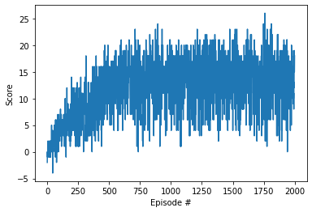

For this navigation project, I implemented Duel DQN algorithm for training the Banana env.
It has been trained by running 2000 episodes, and having average of 13.88 in the end.
For the chosen hyper parameters, I used: n_episodes=2000, max_t=1000, eps_start=1.0, eps_end=0.01, eps_decay=0.995
Furthur improvements: We can add double DQN, as well as prioritized replay to this implementation. We can also improve the overall hyperparamter search with some grid search opportunities, and also potentially searching for a better neural network with AutoML search.
